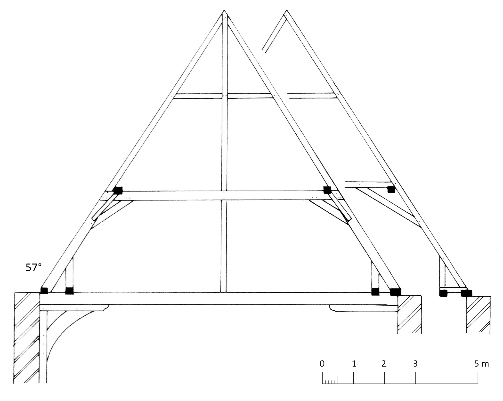
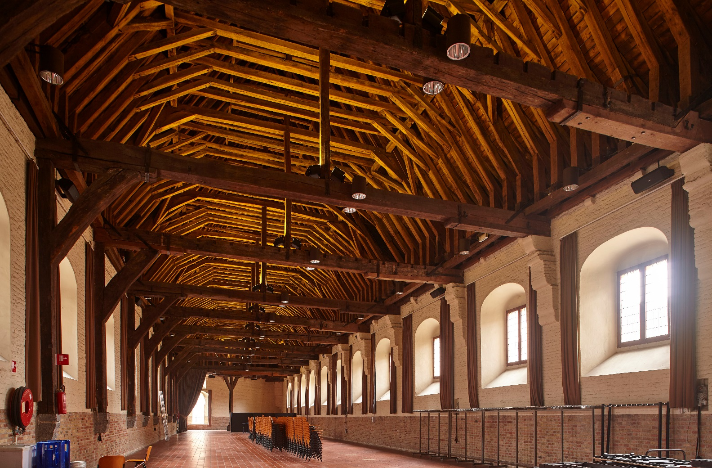
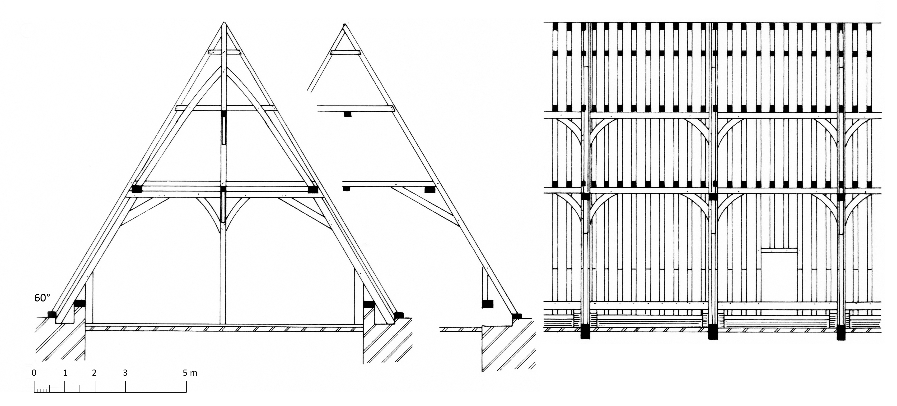
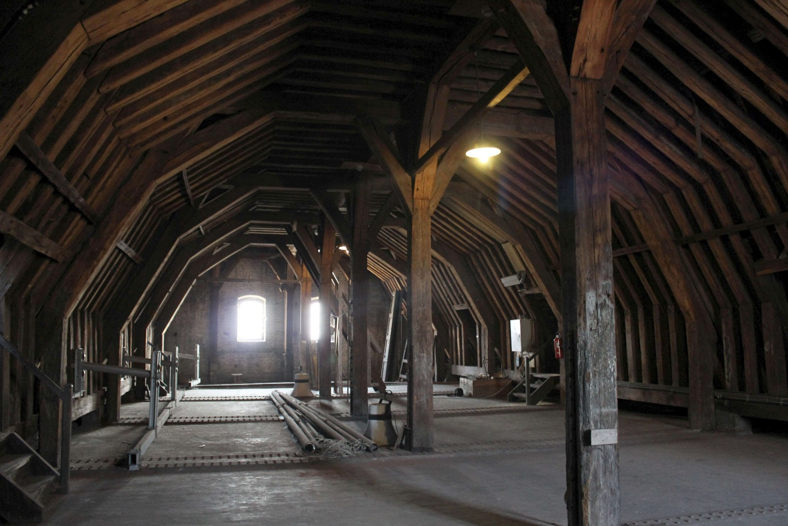

9 Sporenkappen met flieringen op schaargebinten met makelaars
9.1 Hallen, westvleugel
De ziende kap boven de 11,3 m brede en 64 m lange westvleugel is een sporenkap van 94 sporenparen1. De daksporen hebben een doorsnede van 18 x 18 cm en staan hart op hart gemiddeld 75 cm uiteen. De elf trekbalken vertonen dezelfde ondersteuning als in de zuid- en oostvleugel. Constructief lijkt deze kap sterk op deze van de oostvleugel (zie 6.5.4). Belangrijk verschil evenwel is dat in de kap van de westvleugel schaargebinten met flieringen zijn ingebouwd2. In de meeste sporenkappen op schaargebinten staan de schaargebinten onder de sporenparen. Hier nemen de schaargebinten de plaats in van het onderste deel van de daksporen en van de onderste hanenbalk. Opmerkelijk is eveneens dat niet alleen de sporenparen maar ook de schaargebinten van standzonen zijn voorzien. De makelaars staan op de dekbalken van de gebinten en verdelen de bovenste hanenbalk in twee delen. Onder de makelaars staan stijlen die dekbalk en trekbalk met elkaar verbinden. Ook hier zijn alle verbindingen van het pen-en-gat type.

Zoals vermeld vertoont het eikenhout in de kappen van de hallen een snel en onregelmatig groeipatroon. In de westvleugel kon uit slechts één van de zes genomen boorkernen gedateerd worden, waarbij de jongste gemeten jaarring in 1257d werd gevormd. Omdat er geen spinthout aanwezig is, kan enkel 1268d als vroegst mogelijke veldatum worden aangegeven3.

9.2 Stadhuis
Deze merkwaardige kap telt 64 sporenparen4. De sporen hebben een doorsnede van 14 x 17 cm tot 18 x 18 cm en staan hart op hart 40 tot 43 cm uiteen. De getrokken telmerken zijn aangebracht van west naar oost aangebracht, op de onderzijde van de sporen. Aan de noordzijde is een extra markering aanwezig. Op een aantal sporen is een eigendomsmerk opgemerkt.
De buitenste muurplaat ligt op een 20 cm hoge borstwering. De 30 x 35 cm zware raveelbalk ligt ter hoogte van de gebinten op 56 cm hoge sokkels die bestaan uit baksteen (formaat 17,5 x 14,5 cm) en een hardstenen dekplaat. Het is onduidelijk of dit de oorspronkelijk toestand is, dan wel wanneer deze verbouwing zou zijn gebeurd5. De 1,2 m hoge standzonen staan met een pen in de raveelbalk en zijn met een pen-en-gatverbinding en smeedijzeren nagels in de sporen vastgemaakt. Elk sporenpaar bevat drie hanenbalken waarvan de bovenste twee halfhouts zijn verbonden en met twee smeedijzeren nagels zijn vastgezet. Bij de middelste hanenbalk is de verbinding met een bijkomende toognagel verstevigd. De onderste hanenbalken en de bijhorende korbelen zijn met pen-en-gat verbindingen in de sporen vastgemaakt. De hanenbalken dragen dezelfde telmerken als de sporen.
De kap telt zeven makelaars waarvan twee tegen de west- en oostgevel. De makelaars tegen de gevels rusten op dezelfde sokkels als de raveelbalken. De sokkels onderscheiden zich hier duidelijk van het oorspronkelijke metselwerk. Onder de onderste twee hanenbalken bevinden zich hanenbalkflieringen die tussen de makelaars zijn ingebracht. De verbinding tussen makelaar en fliering wordt telkens verstevigd met een kleine schoor. Al deze stukken zijn van west naar oost genummerd in een doorlopende reeks van 1 tot 12. De telmerken zijn bij de bovenste hanenbalkfliering voorzien van een extra markering.

Aan weerszijden van de makelaars staan halve gebinten waarvan de dekbalken met een pen-en-gatverbinding in de makelaar zijn vastgemaakt. De verbinding wordt hier met een klein korbeel verstevigd. Tegen de eindgevels staan stijlgebinten, opnieuw op waarschijnlijk latere sokkels. De stijlen van deze gebinten zijn met een schoor verbonden met de flieringen. Verder bestaat de kap uit vijf schaargebinten waarvan de voet verstevigd is met hoge standzonen. Hier is er geen schoor tussen gebintpoten en flieringen. Alle verbindingen zijn van het pen-en-gat type. De stukken zijn genummerd met hetzelfde telmerk als het bijhorende sporenpaar.

Op de flieringen staan grote, licht gekromde schoren tegen de makelaars. Deze zijn halfhouts verbonden met de middelste hanenbalk. Opvallend is dat deze schoren uit een andere kwaliteit eikenhout zijn vervaardigd. Het gaat duidelijk om hergebruikte stukken: op nagenoeg elk stuk bevinden zich complexe merktekens die in een aantal gevallen doorkruist zijn door nieuwe telmerken die telkens overeenstemmen met de telmerken op de bijhorende sporenparen. Dit werd ook bevestigd door het dendrochronologisch onderzoek. Van drie standzonen kon de veldatum bepaald worden, welke gelegen is tussen 1226 en 1244. De oorsprong van deze hergebruikte balken, bijvoorbeeld uit het “Ghyselhuus” dat verdween voor de bouw van het stadhuis, is onduidelijk.
De nokbalk, de gordingen en de kepers tegen de eindgevels zijn een latere toevoeging.
Vijf stalen uit de schaargebinten, één makelaar en één standzoon vormen samen een 113 jaar lange middelcurve, waarvan de jongste jaarring werd gevormd in 1357d. De veldatum van het eikenhout kan worden gedateerd tussen 1365 en 1387d6. Deze datering stemt overeen met de historische gegevens over de bouwgeschiedenis van het stadhuis7. De bouw begon in 1376 en na een onderbreking in 1380-1385 werd het stadhuis voltooid in 1421.
De hallen in de inventaris van het bouwkundig erfgoed: https://inventaris.onroerenderfgoed.be/erfgoedobjecten/29457.↩︎
Janse & Devliegher 1962, 359, afb. 81-82.↩︎
Eeckhout & Houbrechts 2006.↩︎
Het stadhuis in de inventaris van het bouwkundig erfgoed: https://inventaris.onroerenderfgoed.be/erfgoedobjecten/29238.↩︎
Janse en Devliegher geven een toestand weer waarin de muurplaat en een veel lichtere raveelbalk op de trekbalken liggen. Wellicht hebben zij een oorspronkelijke toestand gereconstrueerd (Janse & Devliegher 1962, 364, afb. 85).↩︎
Haneca 2014a.↩︎
Gilté & Vanwalleghem 1999, 38.↩︎